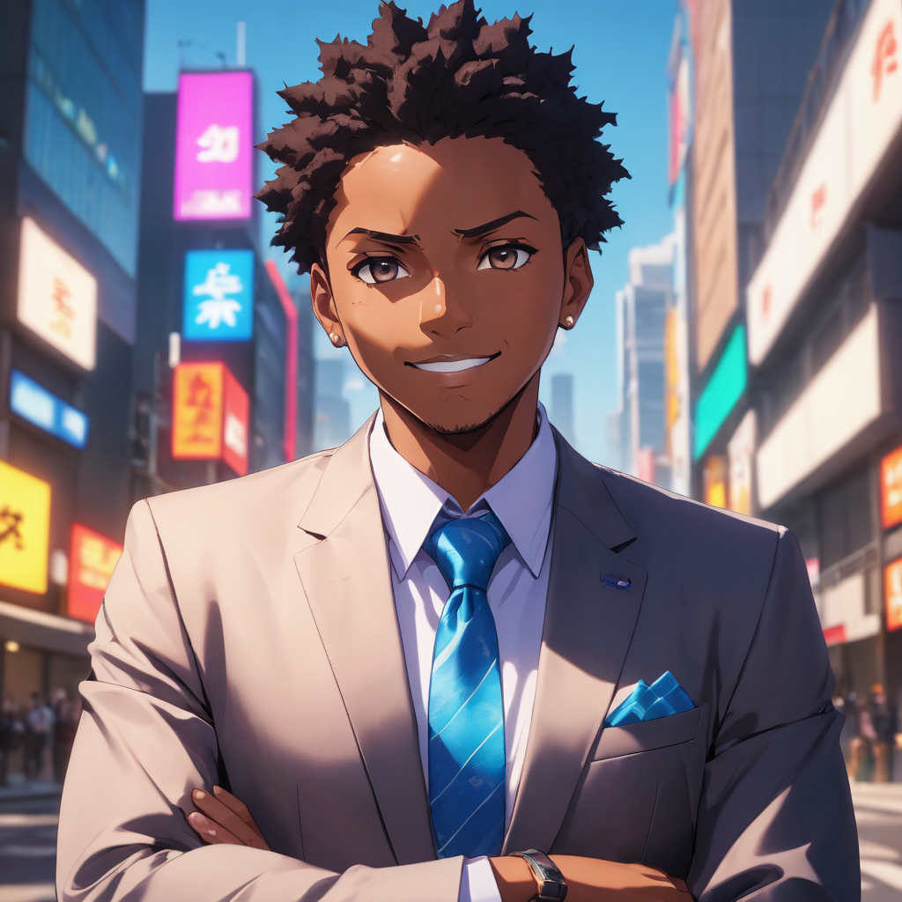

Hey there. I'm Ousmane, a passionate coder and tech enthusiast. I believe in the power of motivation and how it can transform lives. In my free time, you can find me exploring new coding projects and sharing motivational content on Twitter. Join me on this coding adventure and let's make a difference together.